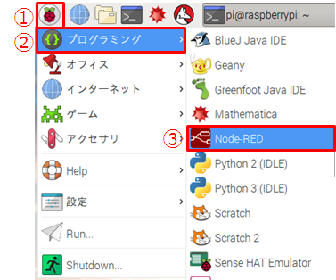
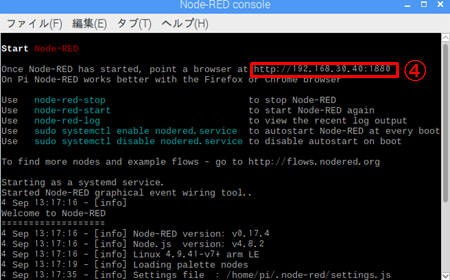
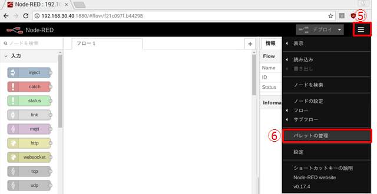
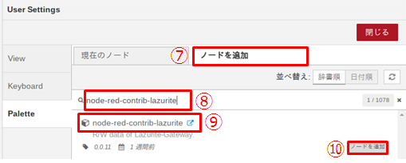
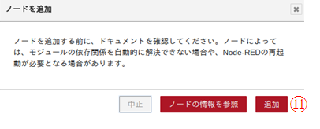
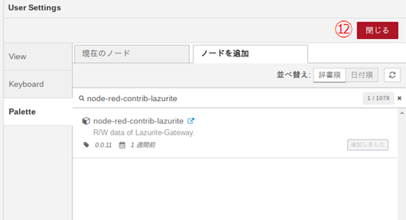
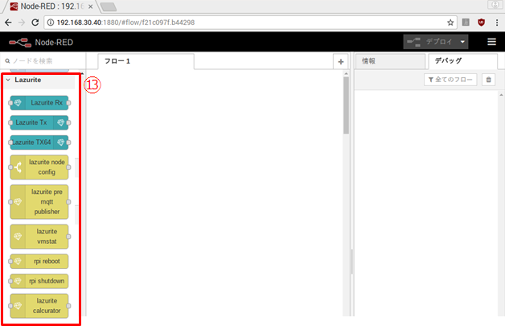

2-2.Node-RED用ライブラリを手動でnpmインストール
2-3.Node-RED用ライブラリを手動でgithubからインストール
１．インストーラーをダウンロードします。
以下のコマンドを入力します。
$ git clone git://github.com/LAPIS-Lazurite/LazuriteInstaller
２．Raspberry Piの設定
以下のコマンドを入力します。
$ cd LazuriteInstaller
$ ./setup.sh
下図は完了後の画面です。完了後に再起動して下さい。
再起動後、以下のコマンドを入力して下さい。
$ cd LazuriteInstaller
$ ./install.sh
2-1. / 2-2. / 2-3. のどれでもインストール出来ますが、2-1.の方が簡単です。
Lazuriteのライブラリを使用しますので、あらかじめこちらの作業を完了しておいてください。
1.以下の手順で Node-REDを起動します。
①メニュー→②プログラミング→③NodeｰRED

２. Node-REDのコマンド画面が開いたら、ブラウザを立ち上げ④のアドレスを貼り付け実行します。

３．ブラウザ上でNode-REDの画面が開いたら、画面右側の⑤をクリックし、⑥の『パレットの管理』を開きます。

４．⑦のノードの追加タブをクリックして、⑧にnode-red-contrib-lazuriteと入力すると⑨が出てくるので選択して⑩のノードの追加をクリックします。

５．下記のメッセージが表示されたら⑪の追加、⑫の閉じるをクリックします。


６．画面左に⑬のLazurite のノードが作成されていればインストール完了です。

2-2. Node-RED用ライブラリを手動でnpmインストール
Lazuriteのライブラリを使用しますので、あらかじめこちらの作業を完了しておいてください。
1. 一度もNode-REDを起動したことが無い場合は、一度Node-REDを起動してください。
$ node-red
起動したら、Ctrl-CでNode-REDを終了します。
2.Node-REDのフォルダが作られていることを確認してください。
$ cd ~/.node-red
$ ls
3. Node-RED用ライブラリのインストール
3-1. npmパッケージインストール
$ npm install node-red-contrib-lazurite
2-3. Node-RED用ライブラリを手動でgithubからインストール
$ cd ~/.node-red/node_modules
$ git clone git://github.com/LAPIS-Lazurite/node-red-contrib-lazurite
$ cd node-red-contrib-lazurite
$ node-gyp rebuild
補足: npmとnode-gypでエラーが発生する場合はソフトウエアのインストールを行ってください。
$ sudo apt-get install -y npm node-gyp
1. サンプルプログラムを使用するために必要なnode-red-dashboardのインストール
$ cd ~/.node-red
$ npm install node-red-dashboard
2. Node-REDを起動する
$ node-red
3. Raspberry Piでブラウザ起動して、アドレスに「http://localhost:1880」を入力してください。
4. Lazuriteのパッケージがインストールされている事を確認します。
| 前[Raspberry Piの初期設定] | [APIリファレンス」次 |